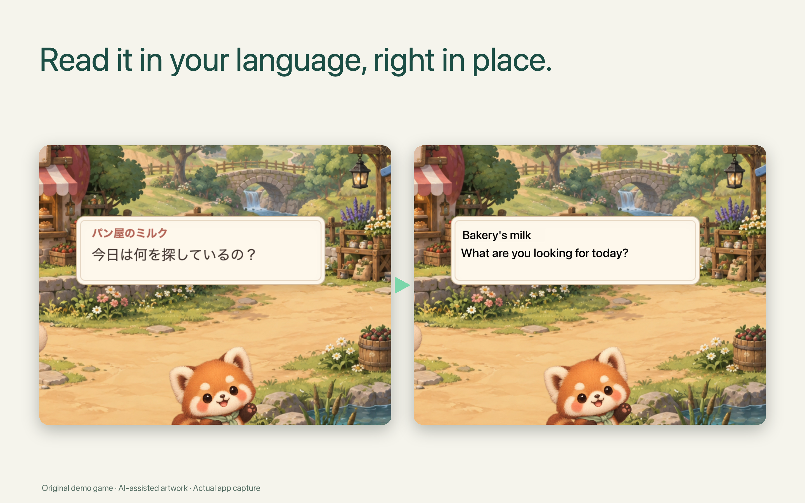
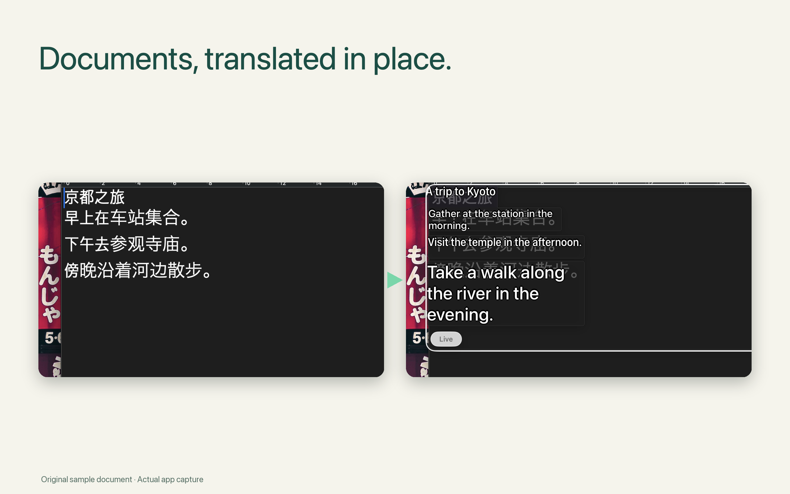

Editorial materials · macOS 15+ · Updated October 18, 2026
Read across languages.
Stay in the moment.
A game’s dialogue. A scanned document. Text inside an image. When copying is not an option, draw a viewfinder and read the translation directly over the original screen.
Selected scenes at original speed, with cuts and camera crops. Original demo game with AI-assisted artwork. Recognition and translation results vary.
Keep the text in its context.
Read a Japanese game conversation without leaving its characters and scenery, or understand a scanned page without retyping it. Move or resize the viewfinder to focus on another part of the screen. Live mode follows changing text in the selected region.
Apple Vision recognizes the text and Apple Translation translates it on your Mac. After the language packs are downloaded, translation works offline. Screen content and translations are not sent to an external server.
Optional help with the text before translation.
On a compatible Mac with macOS 26 or later and Apple Intelligence available, ViewLingo can use the on-device Foundation Models framework to attempt corrections to recognized text before translation. The OCR correction option is off by default and can be enabled in translation-style settings.
Apple Vision recognizes the screen text, optional Apple Intelligence processing reviews that text, and Apple Translation translates it locally. These are separate steps: the language model is used for OCR correction, not as a replacement translation engine.
Correction may take longer and can make mistakes. When the model is unavailable or the correction request reports an error, ViewLingo keeps the OCR output. Apple Intelligence must be enabled and its system model ready; translation language packs are a separate requirement. Screen translation remains available without enabling this option.
Read in place, or give the translation its own space.
Version 2.6.0 is available on the Mac App Store as of October 18, 2026. It lets readers choose the original in-place overlay, original and translated text together above or below the selected area, or a movable separate translation window that stays fixed during Live updates.
This builds on the app’s existing Live screen translation and optional OCR correction. The images below and the video above preserve earlier real app outputs; they do not demonstrate the newer display choices or an Apple Intelligence on/off comparison.
An image-to-text Shortcuts action is in development. It is not part of the current Store release, and it does not use Foundation Models OCR correction. We will share a demonstrated workflow after validation; no release date is announced here.
View the current Mac App Store release →Games and documents, in place.




A native Mac workflow, on-device.
macOS 15 or later. Screen Recording permission is required. Recognition and translation languages depend on the overlap of Apple Vision and Apple Translation support on the user’s Mac. Language packs must be downloaded before offline use.
No account, subscription or app analytics. One-time purchase, with local pricing on the App Store. Translation history stays on the Mac and can be cleared or limited in Settings. Developer: Serendipity Bound.
The video and screenshots show selected real app outputs, not guaranteed accuracy or compatibility with every font, game or rapidly changing subtitle. Earlier reports of translation failing after long sleep are documented in the linked support issue.
Download H.264/AAC demonstration · Game screenshot · Document screenshot